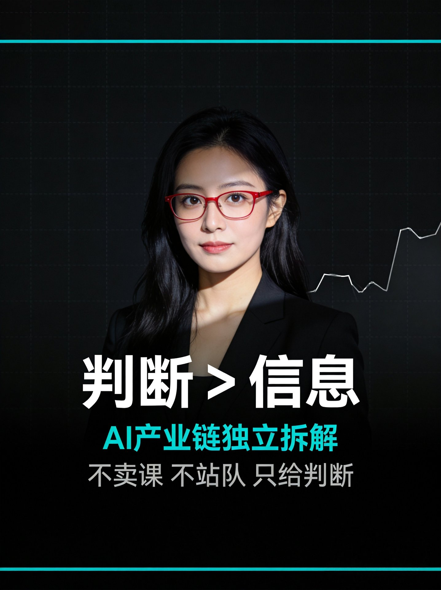

关于小K
自媒体创作者，全网多平台分发。专注AI + 数据收集/研算方向。
所有内容基于AI产业链12层中美对比框架，从能源到AI原生经济逐层拆解。
数据原则：交叉验证、利益相关标注、缺口不补。专业术语必配大白话解释。

小K超爱研究

抖音：小K讲AI营销

微信：AAM_2026
每篇围绕一个反常识发现展开，用数据说话，用图表佐证。
从电力、散热到数据中心选址——AI算力的物理底座
英伟达Groq 3 LPX全面量产，用200亿美元把'推理解码'收编进全栈体系。胜负手不在峰值算力，在Token成本/能耗/延迟；Nebius首批接入获溢价，三星切关联代工。推理支出首超训练，但全栈通吃非无裂缝。
AI产业的钱正在从'卖算力硬件'流向'卖推理能力'。当应用层开始自己造血，算力投资的价值锚，就从'谁能造出最强芯片'换成了'谁的芯片能被最多的应用调用'。
谷歌向来以'自研芯片'为荣，这次松口，背后是三个现实压力：1. Agent负载变了；2. 迭代速度不够；3. 英伟达的挤压。'自己造不如合作造'，是巨头在算力军备竞赛里的现实主义。
下一代谷歌TPU可能不再是'纯训练芯片'，而是把CPU核心装进AI ASIC的'混合架构'——它的目标不是训练大模型，而是跑智能体。核心思路是让不同部件各司其职：CPU核心负责智能体的'大脑'——推理决策、任务规划、工具调用、状态管理；AI计算单元负责智能体的'肌肉'——矩阵运算、向量计算这些重活。
四大科技巨头——Meta、微软、谷歌和亚马逊——在2026年二季度合计烧掉1700亿美元用于资本开支。
光的三层成熟度是将'用光做AI'按成熟度分为三层：层1超固体/极化子神经形态（远期，10年起），层2光子计算芯片（中期，3-5年内可能看到小批量），层3光互连/CPO（近期，2026-2027已能落地）。层3是'用光帮GPU跑得更快'，层1/2才是'用光替代GPU'。
嘉立创的核心商业模式是“免费送铲子，靠制造服务变现”：EDA 软件永久免费作为流量入口，PCB 打样、元器件采购、SMT 贴片等制造服务作为变现出口。它通过自研智能拼板算法把零碎订单拼到标准大板上生产，将单次打样成本从数千元降至几十元甚至几元，交期从数周压缩至最快 12 小时，以此形成网络效应壁垒。
A：BEST是合肥的紧凑型聚变能实验装置，计划2027年底建成，2030年前后演示发出第一度聚变电，目标是实现能量净增益。这是中科院等离子体所和中核集团首席科学家公开确认的"三步走"时间表的第一步。
MLCC涨价潮的本质，是AI算力需求与基础元件产能之间的一次'错配清算'。过去三年，MLCC厂商的扩产节奏是跟着智能手机走的；但AI服务器和汽车电子对MLCC的需求量，是手机的3到5倍。当需求结构突然切换，产能却来不及转身，涨价就成了唯一的'市场语言'。
1.6T 光模块上量，单通道速率从 112G 翻倍到 224G，PCB 从普通载板升级为 mSAP/HDI 高阶板，价值量翻倍。沪电股份（1997 亿市值、PE46.4）、深南电路（2153 亿、PE59.2）、胜宏科技（1871 亿、PE40）是这轮"板"升级的隐形赢家。
因为 CPO 与可插拔光模块不是零和替代，是接力关系。CPO 晚到，等于把 1.6T 可插拔（以及过渡方案 NPO/LPO）的“赏味期”往后拉了两年以上。市场错把“CPO 进度”当成了光通讯唯一的温度计——实际上 CPO 慢一点，手上做 1.6T 可插拔的厂商，反而把缺货的好日子又续了一年。
用 Trading Comps 拆完的结论是“相对同业中性、绝对倍数极端”。相对 7 家同行，中际旭创当前市值约 1.17 万亿元，落在 PE/PS/EV 营收三种方法 peer 区间的中位附近，不算显著便宜、也不算贵出天际。
AI大模型参数量的指数级膨胀正在重塑全球数据中心基础设施的投资逻辑。当GPU集群从千卡走向十万卡乃至百万卡规模，光互联模块从"可选配件"升级为"算力bottleneck"的核心环节。…
微软Project Natick水下数据中心故障率仅陆地1/8，却遭终止。中国海兰信商用落地，全生命周期成本低15-20%。
ChatGPT一天85万度电，全球数据中心用电量超德国+意大利。美国造电，中国搬算力，两条路谁走得通？
散热占数据中心建设投资20%，GPU功耗三年翻三倍，80%冷却水蒸发回不来。风冷散不掉，水不够用，两条路堵死只剩液冷。
英伟达800V架构引爆功率半导体市场，碳化硅成刚需。中国天岳先进衬底份额反超Wolfspeed全球第一，但器件和模块仍落后。
GPU、HBM、折旧、融资——算力产业链的钱流追踪
长鑫LPDDR6量产，小米18 Fold全球首发、玄戒O3首家支持。这是国产SoC+DRAM+终端的芯存协同，也是长鑫从追赶者转向新产品周期参与者的节点。红利沿确定性分层扩散，概念公司勿等同受益。
铜价创历史新高，但全球并不缺铜。美国用关税预期+战略储备把全球可流通铜吸向本土，形成区域性错配。稀缺溢价难消、政策溢价可退——短期看美国库存流向，长期看矿山供给能否跟上电气化与AI铜需求。
英伟达从芯片商转向AI基础设施资本配置者：独家供应+持股SpaceX+5000亿算力融资平台，把需求分散到航天、主权AI、机器人。但股权—营收—市值的正反馈回环，顺风放大估值、逆风连锁下跌。
韩国央行背靠背加息至3.00%，是把AI算力过热写进货币政策，而非外生紧缩。HBM长协锁价缓冲了汇率逆风，但K型复苏让民生部门成了加息的真实天花板。
智谱 H 股配售募资 314 亿港元，中国 AI 模型层的融资通道从一级市场转向二级市场。钱进来了，但不能直接等同于国产算力订单——通道打开，不等于需求落地。
国产浸没式 DUV 完成量产验证，被卡七年的光刻设备钉子开始松动。叙事从硬缺口清单转向工作量清单——能造和能量产之间，仍隔着良率与生态的硬仗。
OpenAI 自研推理芯片 Jalapeño 进入量产窗口，模型厂第一次把推理成本握在自己手里。当 ASIC 渗透率抬头，算力价值链从英伟达定义转向模型厂自定。
8 月 19 日 A 股三大指数集体下挫，上证跌 1.67%、深成指跌 3.32%、创业板指跌 4.20%，前期高位赛道主力资金全天净流出约 454 亿元。但煤炭板块逆市飘红：煤炭 ETF（国泰）盘中涨 1.10%，近 10 日资金净流入 1.59 亿元，最新规模 143.28 亿元；
金银比 = 1 盎司黄金 ÷ 1 盎司白银，2026 年 8 月约 89，即 1 盎司黄金能换 89 盎司白银。20 世纪长期均值约 47，当前比均值高出近一倍，说明同一次信用重估里白银的金融溢价没跟上黄金——它一半被工业需求拖着（约六成需求是工业），一半被小池子的投机放大。
博通正在洽谈把 AI 芯片债务融资规模扩大到 700 到 800 亿美元，通过 SPV 结构，总盘子可能摸到 1000 亿美元。这笔钱要投进定制 ASIC 和 AI 网络的产能与交付扩张。
两者是同一枚硬币。增长期，三个集中（供应商自保、买家15-20家、需求单一）把每一分需求放大；停滞期，三者同时反噬——保险失效、买家撤退、需求断层。开关只有一个：增长是否停滞。真正要盯的不是杠杆有多大，而是需求增速的转折什么时候来。
超纯应材在创业板上市首日，开盘涨581.92%，收盘涨662.24%至503元，总市值达512亿元，发行价65.99元，超募49%。这一暴涨是市场对半导体材料国产化叙事的集中定价，背后有产业资本集体站队。
美光DRAM市占率为25%，距离第一名SK海力士的26%只差一个百分点。这意味着DRAM市场从三星一家独大彻底演变为三强鼎立、贴身肉搏的格局。
三星的zHBM技术，核心不是把存储颗粒做得更小，而是改变了存储与计算之间的物理关系。通过晶圆键合工艺，将存储层垂直堆叠在AI加速器之上，让数据'上楼即达'，而不是'跨城运输'。
市场不再为“增长故事”买单，开始为“回报周期”定价。当capex增速远超收入增速时，“增长”本身开始变成一种风险。市场反应是其二级份额报价回落约9%——不是因为你业绩差，而是因为你花钱的速度让“回报周期”变得更不可见。
三大存储原厂2027年DRAM与HBM产能提前18个月售罄，存储业从按需生产转向配额分配。当HBM与AI服务器占去DRAM产能约七成，手机/PC的配额正被压缩——这不是周期波动，而是AI算力对存储产能的虹吸效应。
国产算力正在从'政策驱动的主题'切换为'订单驱动的产业'。驱动力是'必须要有国产方案'的刚性需求，下游客户在'可用性验证通过'后开始批量下放订单，订单落地为收入，收入再转化为利润。
8/8 中报（待披露）重点不是"涨多少"，是三问：净利增速能否匹配 PE279 的估值、毛利率能否守住、存货/预付款能否印证订单真实。中报是验证点，不是终点——它验证的是"国产 GPU 份额破 40%"叙事能不能落到财报上。
75% 红线（网传待核实）若落地，考的是国产 GPU 的"真替真用"能力，不是"国产替代情怀"。窗口期在 9 月、发酵在 8 月，但真正决定成败的是四本账：订单账毛利账生态账审计数账。把情怀当业绩，是这一轮最容易踩的坑。
模型单价崩了 10–24 倍，但 Agent 单任务 token 消耗涨了 5–30 倍，企业推理预算占 AI 算力开支约 2/3、占企业 AI 预算约 85%。总账单没塌，是低价引爆了需求。而算力链（GPU / HBM / CoWoS）是"卖铲子"的，总池子因此更厚——这就是为什么模型免费、算力股却在涨。
不是。这轮杀的是“估值有没有被提前透支”，不是“AI 还行不行”。需求比历史任何时刻都真实——四大云厂 2026 capex 指引合计超 7000 亿美元，但 2025—2026 上半年把未来几年的乐观预期一次性计入了当下。当市场从“为未来十年付费”切换到“验真伪”的定价阶段，回撤是结构性的，不是叙事崩塌。
不一样在结构性、延续性。普通周期靠“大家都不扩产”涨价；这轮是 AI 用 HBM（高带宽内存）虹吸了通用 DRAM 产能，叠加 AI 服务器需求外溢，制造出一个延续到 2027 年的真实缺口。TrendForce 预测 2026 年 DRAM 均价 +46%、NAND +65%；
因为这 20 多个点的毛利差是<strong>结构性</strong>的，不是“NVDA 更会讲故事”。2026 年账本：NVDA 毛利率 72–75%（6 月季 72.42%，调整后近 75%）、经营利润率约 64%；AMD 毛利率约 50%（3 月季 50.00%）、经营利润率仅 11.65%。
因为 2026 年 AI 硬件的<strong>绑定约束（binding constraint）是先进封装 CoWoS，不是晶圆投片</strong>。台积电（TSMC，中国台湾）的 CoWoS-S 与 CoWoS-L 两条线均已售罄，lead time 长达 52–78 周。
因为 AI 时代三张表被 Capex 重塑了。看 Amazon：FY2024 Capex ≈830 亿、FCF ≈329 亿；FY2025 Capex 飙到 ≈1318 亿、FCF 骤降到 ≈77 亿——利润在涨，可自由支配现金几乎被 Capex 吃掉。
核心矛盾从“有没有 AI 需求”切换为“巨额资本开支能不能兑现利润”。7 月超级财报周（谷歌、微软、Meta、苹果、亚马逊 + 韩国存储双雄集中交卷）是关键分水岭，市场不再为“买了多少显卡”鼓掌，而是盯“云增速 / AI 变现 / 自由现金流”三把尺子。一句话——AI 军备竞赛从“讲故事”进入“验真金”。
变浅了，但没消失。HBM 确实是 AI 算力真瓶颈——一颗 HBM 消耗约 3 倍于同容量 DDR5 的晶圆产能，2026 年 HBM 将吃掉全行业约 23% 的 DRAM 晶圆（2025 约 19%），稀缺是结构性的。
三年时间，五分之四的市场易主。费城半导体指数一周跌了10%，直接跌进技术性熊市。
本周，费城半导体指数从历史高点回撤超20%，正式跌入技术性熊市。一周跌了10%，是2025年4月关税冲击以来最惨的一周。
HBM占AI芯片BOM成本45%超越GPU核心，美光CEO坦言只能满足50%-67%需求，三巨头控制全球HBM市场——AI胜负手已从算力转向存储。
追踪一条钱流从零件到终端：B200拆解$6400显存占45%，4层加价英伟达毛利81%，投入1块收回8分——约2.1万亿云积压订单中41%是循环投资。中国没有循环但有饥荒，API便宜10-77倍。
GPU 3年基本归零，但抵押它借的债要30年才还完。CoreWeave用2年过时的芯片做抵押品借了250亿美元，我翻了SEC文件算了这笔账——越算越离谱。
英伟达毛利率75%，OpenAI亏损是营收3.7倍。7250亿资本支出，上游吃肉下游还没上桌。
SpaceX账上1008亿现金还借250亿债。过桥贷款利率4.58%不算高息，算力合同90天可终止，债市一级抢购二级抛售——钱够不够，取决于你信不信AI还能烧多久。
DeepSeek 500亿首融 vs SpaceX 750亿史上最大IPO，控制权设计、估值逻辑、风险收益逐一拆解，三个可复用分析框架
英伟达份额从90%掉到74%，大客户纷纷自研芯片，AI泡沫正在破裂——但破的不是AI，是一楼基础设施的估值泡沫。价值往三楼搬，中国接住了这一棒。
OpenAI 9个月造出推理芯片Jalapeño，成本降50%。真正逼它的不是英伟达，是中国模型30倍的价格差。美国卡光刻机，中国卡推理成本。
英伟达下一代旗舰机架Kyber NVL144，原本要在GTC后量产。黄仁勋亲手展示的那块灰色板子——PCB中板，机架系统的"高速公路立交桥"。144颗GPU要在这块板上实现超高速互联，取代2万根铜缆。
全球AI算力最大的瓶颈可能不是芯片，而是一种你听都没听过的金属——铟。全球每年产量不到1100吨，中国占了70%，AI正在把它吃光。深度解析磷化铟供应链危机、铟价走势、供需缺口与投资逻辑。
NV 英伟达 NVIDIA AI芯片垄断 · GPU市占率>80% CW CoreWeave AI算力中间商 · GPU租赁 NB Nebius 前Yandex · AI云基础设施 AI OpenAI ChatGPT · ARR~$200亿 A Anthropic Claude · ARR~$90亿 MS 微软
所有人都在盯着英伟达的GPU算力翻倍节奏，但少有人注意一个反直觉的事实——AI集群里增长最快的成本不是计算，是数据搬运。
性能、价格、落地——大模型时代的真实账本
AI原生系统是指把'写文章'这件事当成一套流水线工程来跑，一个8层的AI原生SOP闭环。AI干得好的事——采数据、跑初稿、生成代码、扫合规、转六形态、定时分发——它全包了，而且24小时不喊累。0→1的系统设计是灵魂，1→100的批跑是AI。
智谱AI通过H股配售募资约314亿港元，是国产大模型头部企业迄今最大的一笔融资动作，公告口径明确写着'用于算力与模型研发'。
GLM-5.3是智谱发布的编程专模，官方口径在漏洞识别基准CyberGym上拿下84.5%的得分。它主打的是'审查力'而非'生成力'，即在真实长程开发环境做后训练，并拉来十余家安全实验室做红队评估，用强化学习把'找漏洞'练成肌肉记忆。
GUI是图形用户界面（Graphic User Interface）的缩写，就是你在手机、电脑上看到的那些按钮、图标、窗口。GUI智能体，简单说就是一个能“看着屏幕自己操作”的AI：你给它一个任务，它会像人一样看屏幕、点按钮、填表单、翻页面，把一连串原本要你手动点的操作自己跑完。
直觉会说 AMD，但算完账，答案是反的：老大倒下，老二居然不是赢家。真正稳坐钓鱼台的，是台积电、SK 海力士、博通这些卖铲子的。
就是你在 Google 搜索时，结果页最顶部那段 AI 直接写好的答案。以前你要点进网站才能看到答案，现在搜索页上就看完了，自然没人再点网站。Ahrefs 测出来，有 AI 概览的关键词，排名第一的网站点击率低了 34.5%（2025 年）到 58%（2026 年）。
中国AI三巨头2026年集体在AI上赚不抵花：阿里自由现金流-446.7亿/季、腾讯-138亿/季、字节缺口-850亿/年，但谁都不肯停。阿里修路、腾讯守门、字节造产品。
CUDA 是英伟达 2006 年推出的并行计算平台，是'让开发者用 GPU 做计算'的底层工具。近 20 年积累，全球 AI 开发者、框架、模型、工具库几乎都基于它。重要在于'生态锁定'：换芯片 = 重写整个技术栈，迁移成本极高，所以开发者被锁在英伟达体系里。
DeepSeek一年营收（年化）约4-5亿美元，约合29-36亿人民币，主要靠卖API给企业。这是36氪2026年8月引述的市场口径。
因为我的AI是'系统'，不是'工具'。文章在生成之前，已经走完'采集→入库→打分→串联→验证'五个环节——它不是AI'写'出来的，是AI从一个运转着的系统里'长'出来的。工具产出文字，系统产出认知。
8月18日，阿里巴巴发布了一款面向笔记本电脑的 AI 模型，并同步开源其最强的 Qwen 模型权重——直接回应 Meta 的 AI 挑战。
Cursor 的算盘很清晰：1. 写代码只是入口：开发者用 Cursor 写代码，写完了呢？还是得推到 GitHub。这等于 Cursor 在前面干活，GitHub 在后面收钱（托管是开发者生态的核心）；
Stripe 收购 OpenRouter 是为了在 AI 应用的必经之路上提前占住'过路费'的位置。Stripe 可以把'模型调用'和'模型计费'串成一条完整链路：开发者调模型，Stripe 统一结算。这是把'卖铲子'升级成'在矿场门口收过路费'。
阿里把灵犀互娱卖了——不是游戏不赚钱，而是阿里的账本上，'AI与云计算'的优先级已经压过了'游戏'。卖掉游戏，不是游戏不好，而是阿里在给自己'腾位置'。
同条件大分化只能说明一件事：问题不在被发现，在内容本身。被引9次的文章内核是那个idea是人想出来的，不是AI想出来的，填了一个别人没填的空白，而且填得足够扎实，于是AI把它当成了这个问题的唯一权威源。
OpenAI在7月30日将GPT-5.6（中文名Luna）的输入价格直接砍掉了80%。这不是清仓大甩卖，而是一场蓄谋已久的战略转向。
这次暴涨的本质，是市场对'AI 叙事'的一次定价修正：从'讲故事'切换到'看报表'。Palantir 的 Q2 业绩之所以能引发 29.45% 的单日涨幅（创 2024 年 2 月以来最大），核心在于它向市场交付了两样东西——可验证的增长数字，以及可复制的商业化路径。
源自 KPMG 2026-06-30 企业 AI 调研（88% 试点 / 24% 见回报），与 MIT（95% GenAI 试点零 P&L 影响）、Gartner（40% 项目 2027 前取消）相互印证，方向一致。具体比例因样本不同会有浮动，但「试点多、回报少」是多重独立来源的共同结论。
不晚，但「通用」晚了、「垂直」正当时。平台整合的是中间层，行业工作流层（尤其合规重、数据散、玩家少的垂直）仍是空白。关键看筛选矩阵 4 问。
因为它把 API 调用单价压到了基准的 1/30，让“单位智能的获取成本”按数量级下台阶。当 token 价格接近水电，模型就不再是稀缺资源，而是 commodity——估值逻辑从“谁模型最强”切换到“谁能在 token 价格归零前建立分发壁垒”。这不是 2027 泡沫论的结果，而是它的扳机。
不是模型不够强，而是"工程化 + 评估 + 治理"三道坎。79% 企业已启动部署，但 40%+ 项目将在 2027 年底前被取消、95% 试点零可衡量回报；活下来的 11% 平均拿到 171% ROI。差距不在选了哪个模型，在于是否提前搭好逆向 PoC 指标、离线评估集与责任闭环。
2026年OPC一人公司爆发式增长，1600万家存量、47%激增，但50%月入不到7000元、20%跑通闭环、1%应用层利润占比。从产业链独立拆解，冷静判断OPC是机会还是陷阱。
首轮融资 510 亿、API 价格打到 0.025 元/百万 tokens、开源最强模型——DeepSeek 把模型做成自来水后，OPC 一人公司创业者的三道生死线：成本错觉、稀缺性崩塌、禁区地图。
2026年7月13日晚7点，一家成立刚满3年的大模型公司，正式发布了全球首款AI智能体手机。不是给安卓系统加个AI助手，而是从零做了一套操作系统——Step AOS。终端品牌命名为STEPX，首款手机型号为STEPX Neo。
2026年7月14日，QuestMobile发布上半年AI应用报告。数据出来的那一刻，我知道很多人又会只记住一个数字——
Anthropic发明了Jacobian Lens（雅可比透镜），第一次系统性读到AI的内心独白——发现Claude有一个叫J-space的
中美旗舰AI大模型性能差3%，价格差30倍。DeepSeek ¥6 vs Claude ¥181。李开复：中美AI是两条完全不同的线。
AI内容播放量一年翻两倍，事实性问答场景下近三成可能出错，25个平台全没识别出来——从游戏攻略到溴中毒，一条没有质检的工业流水线正在运转。
全国1600万家一人公司冲进AI产业链利润仅1%的应用层。50%月入不到7000元，95%的AI个体项目达不到预期营收——门槛归零≠利润归你。
Midjourney造医疗扫描仪，不是跨界是重构。AI重构行业五步法：找到假设墙、翻译成数据问题、算力替代技能、B转C、数据飞轮。
三层模型、本土案例、ROI拆解——AI营销的真相
不限于AI，但同样用数据说话
深度≠堆数据，是事实锚定+作用力推理+诚实B面。直接丢标题给AI写不出深度，缺的是真值库可钉、框架可推、反方可克的三层。这套系统让飞轮越写越准。
脑机接口政策、资本、临床三热，全球已有真实植入者；但颅外采不到信号、编码未知、尺度悬殊，从业者判断春天还远。
铜价创历史新高却全球过剩，这一轮涨的是流向而非短缺：美国关税预期引发虹吸、矿端收缩与AI铜箔缺口叠加。
VLCC现货日收益连续四季度站上六位数美元/天，史上第二高，仅次2004–08超级周期。这轮由制裁与红海/霍尔木兹改道撑起，盯三大咽喉、合规运力与新船交付节奏。
全固态把液态电解液换成固态电解质，锂金属负极让能量密度从250–300 Wh/kg跳到400–500 Wh/kg；机器人机身极挤、对安全要求高，可能比汽车先规模化吃下它。
A：合肥从来不是在赌，它是一台运行了50年的算法，每一笔所谓的"豪赌"，都是同一套程序的一次执行。这套算法的核心不是追风口，而是补缺口，即分析产业链缺啥、找链主、以投代引、长期陪跑。
从1992年钱学森的"疯信"到2025年全球登顶，33年战略定力、四重机缘叠加、日德美三线失守、全产业链拆解——比亚迪/奇瑞/吉利/上汽四大品牌做对了什么？
天网地网两张网——从火箭回收到低空经济的万亿赛道
40天两度回收火箭打开卫星直连：火箭降本→更多卫星上天→直连网络更密，但用泡沫尺子量，短期仍靠愿景撑估值。
吉利EEA4.0量子级AI电子电气架构的总算力超过3000TOPS，官方口径是为L4自动驾驶做储备，超出量产需求数倍。
2026年上半年全球Physical AI融资突破558亿美元，中国人形机器人出货占全球84.7%。本文深度拆解VLA技术路线、BOM成本结构、量产进度，揭示Figure AI估值390亿美元与高盛2035年预测380亿美元市场的估值悖论，以及中国供应链的不可替代性。
2026年7月，中国同时打开天和地 — 长征十号乙首飞回收成功 × 低空经济制度性开放
Momenta港股上市，市值约700亿港元。翻完招股书，拆解两条核心线：资金流向（钱从哪来、到哪去）和业务流向（产品从哪来、到哪去）。智驾行业终局，不是谁卖车多，而是谁在每辆车上持续抽成。
成本拆解、供应链国产化、量产路径——人形机器人的真实账本
真赚钱的只有少数几家整机厂加一整层卖铲人。宇树2025年净利2.88亿元、净利率16.9%，是少数已盈利的整机厂；优必选2025年净亏7.03亿元、净利率-35.1%、产能利用率仅18%，这是纯讲故事。
宇树科技以150.8美元/股的发行价启动科创板申购，对应发行市值约609.93亿元，发行市盈率219.23倍——行业平均静态市盈率只有38.56倍。这不是巧合，而是同一股力量在推动：产业从'千台级实验室Demo'跨过'万台级可量产硬件'的门槛后，资本提前为'量产带来的成本下降 + 大模型落地需要的物理载体'付了溢价。
三拐点同频，不是巧合。它意味着具身智能正从实验室走向工厂，从概念验证走向商业验证。上一次我看到这种信号组合，还是2019年的新能源。
URKL格斗赛全网曝光5-8亿。擂台是假，压力测试是真——每一拳跑出来的数据都在喂工业级算法。
人形机器人三年成本砍掉95%，从59万降到2.69万。砍完之后还剩灵巧手、丝杠、续航三大硬骨头。中美走的是完全不同的两条路。工厂已经上了，家里还要等。
AI制药是指利用人工智能技术参与药物研发的各个环节。AI最强的是'算'的前半段（发现+设计），最弱的是'试'的后半段（临床执行）。一款药最终的生死，恰恰卡在AI插不进手的临床试验上。
FCC的授权针对设备进入美国市场的准入资格，将外国逆变器列入覆盖清单意味着相关型号无法再通过常规认证路径进入美国，直接堵住中国电力电子设备（如用于数据中心备用电源、储能系统的逆变器）的对美出口通道。
BIS把阿联酋从最严格的出口管制类别（D:3、D:4）中移除，加入相对宽松的A:5类别，允许先进计算芯片对'经批准的实体'免于单项许可，仅需受限于'经批准实体'名单（STA）。
处方外流政策松绑，打开了处方药从医院流向院外市场的物理通道；而医疗数据要素入表试点，则给这条通道上的每一笔流转数据贴上了“可计价资产”的标签。两者叠加，互联网医疗平台的角色从“药品搬运工”升级为“医疗数据资产的加工厂和交易所”。
三星电子Q2营业利润为89.49万亿韩元，同比增长1814%。这是历史最高单季利润，其中DS部门（半导体）营业利润达89.2万亿韩元，几乎贡献了全部利润。
美白宫科技政策办公室主任、财长等官员以“蒸馏”为由威胁制裁中国AI企业，并点名Kimi K3“蒸馏”了Anthropic的Fable模型。商务部回应称此举“缺乏事实依据、典型AI霸权主义”，OpenAI战略负责人Dean Ball也公开表示K3的优秀不能简单归因于蒸馏。
Alphabet和特斯拉因为自由现金流转负，市值合计蒸发约5000亿美元。市场在用真金白银投票：AI的巨额资本开支，到底能不能变成利润？
BIS拟在FY2026内推出'AI扩散重构框架'，监管重心可能从芯片硬件转向模型层。这意味着AI能力的出口将附带合规审查，包括训练数据来源、模型权重分发、推理服务的地域限制。
谷歌把2026财年资本开支指引上调至1950-2050亿美元，比原指引1800-1900亿高出150亿美元。这不是小修小补，而是对AI算力需求的前瞻性加码。
2028年商用指的是在2028年实现核聚变发电的商业化应用，但文章指出这更可能是‘工程演示堆’并网发电（输出净电力）的技术可行性宣言，而非经济可行性的承诺。真正的商用意味着度电成本具备竞争力，目前全球尚无任何装置证明这一点。
日本第三轮半导体设备出口管制是日本经产省修订《外汇及外贸法》后，于2026年8月1日正式生效的出口限制措施。其核心增量在于首次将先进封装设备纳入逐案审批，并取消了通用许可，针对HBM、Chiplet、2.5D/3D堆叠相关设备的出口申请，行业统计的驳回率已高达70-80%。
路透社8月4日报道，美国政府正起草针对中国数据中心零部件的新进口限制，FCC（美国联邦通信委员会）推进将光收发模块纳入受管制设备清单。这意味着AI供应链的管制逻辑，正从‘卡住算力心脏’延伸到‘掐断神经末梢’。
DeepSeek V4 Flash单日消耗8万亿Token（5万亿免费+3万亿付费），比全球接入400多个模型的OpenRouter全平台日均总量6.6万亿还高，这是数量级的碾压。做到这件事的DeepSeek V4 Flash，每百万输出Token定价2元人民币，比Claude Opus 4.8便宜约85倍。
美国对华AI限制正从“点状封锁”转向“面状筑墙”，不再只盯着芯片本身，而是把“制造业单项冠军”“专精特新小巨人”这类中国产业荣誉直接写进制裁名单的“依据”里，并开始覆盖GPU、光模块、人形机器人、电力逆变器、高校科研和企业荣誉等全部环节。
智微凌峰基金是一只规模30亿元的产业基金，由中微公司和澜起科技等产业龙头牵头，联合上海国投先导等地方国资和智微资本设立，目标直指半导体设备、零部件、材料、先进封装这四个环节。其核心意图是在现有龙头企业的生态链上，用资本手段催熟一批掌握关键工艺的配套企业，从而把整个产业链的木桶短板补起来。
协议核心是协同推进人工智能公共算力中心、城市公共云、数据基础设施，并包含鸿蒙PC产业、开源鸿蒙生态、数智人才培养等。这次合作的核心不是“买芯片”，而是“建生态”，要把华为的整套技术栈成建制地嵌入省级数字经济的骨架里。
英伟达向Lancium投资最多30亿美元，本质是一次对'算力上游电力'的战略锁定，直接目标是保障Stargate项目的电力供应。深层逻辑是AI算力扩张的瓶颈正在从'芯片产能'向'电力供给'迁移，英伟达需要确保卖出去的每一块GPU都有足够的电让它跑起来。
摩根大通把2026年科技债发行预期上修至5000亿美元，其中4500亿至5400亿美元明确流向AI基建，用于资助OpenAI、Anthropic等基础模型公司的6个已完成和4个计划项目。
工信部和国资委在6月启动的'人形机器人实景实训专项行动'，让机器人在真实的工厂、园区里'上班'打螺丝、搬箱子，目标是在年底前让万台级机器人'上岗'实训。
英伟达的壁垒是CUDA生态+架构领先+与云厂/代工深度绑定。封杀中国模型会掐断美国初创的低成本算力供给，迫使它们转向开源权重模型，而开源模型在非CUDA硬件上的优化需求暴增，这会松动英伟达的生态粘性。
PE 基本作废了。我把自建 AI 制药 Comps 子表（32 家 peer，截面 2026-07-25）按 PE(TTM) 排序：约一半 PE 是负的（美迪西 -80.5x、华大智造 -124.2x、Recursion -2.6x、Tempus -24.8x、Guardant -43.3x 等），
是"范式迁移"而非"全面颠覆"。本质是研发从"湿实验优先"迁到"干实验优先"——用生成式化学 + 蛋白质结构预测，把最烧钱、最靠运气的苗头发现阶段搬到计算机里先做。它确实压缩了"苗头发现/候选提名"周期（Insilico 自述约 18 个月 vs 传统 4–6 年），但救不了"临床失败"这道坎，
2026年7月，苹果41页诉状起诉OpenAI窃取硬件商业秘密。深度解析400+前员工、65亿美元收购背后的法律与产业逻辑。
自媒体创作者，全网多平台分发。专注AI + 数据收集/研算方向。
所有内容基于AI产业链12层中美对比框架，从能源到AI原生经济逐层拆解。
数据原则：交叉验证、利益相关标注、缺口不补。专业术语必配大白话解释。

小K超爱研究
抖音：小K讲AI营销
微信：AAM_2026